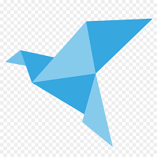

Origami designs
About us
Follow us

SHARP EYED BIRDS
- A bird is a omnivorus animals that are areal.
- Its bones are shallow it uses its eyes to measure the distance.
-
Some of them have a strong beak which helps them to catch its prey.
THE HUGE ELEPHANT
- An elephant is a heavy weight large size animal.
- It has a big trunk to take water and food.
-
It has so sensative ears that can even hear light vibrations also !!!

THE WISE CHAMELION
- It is a very intellint animal.
-
It changes the colour with respect to its background and also to hide
from its predetors.
- Its eyes can rotate upto 180 degrees!!
THE FAT PANDA
- Its is a very fat and cute animal.
- its diet is 99% bamboo
-
It has a black spot around its eyes to neglect the reflection from the
sun!!